Organisaties en HRVoor organisaties
Aandacht die nietvan toeval afhangt.
Een structurele aanpak: beleid, toegankelijke ondersteuning en een werkcultuur waarin mensen zien wat er speelt.

Verlies. Ziekte. Een ongeval. Een reorganisatie. Ingrijpende gebeurtenissen raken mensen én organisaties. Wij helpen werkgevers, leidinggevenden en teams om daar menselijk en professioneel mee om te gaan.
Een structurele aanpak: beleid, toegankelijke ondersteuning en een werkcultuur waarin mensen zien wat er speelt.
Kennis, handvatten en begeleiding voor het eerste gesprek en alles daarna. Geen therapeut, wel een plan.

Laagdrempelige, deskundige begeleiding. Vertrouwelijk, je werkgever regelt de kosten en leest niet mee.
Organisaties werken met Dearly samen op vier fronten. Vooraf, zodat mensen weten wat ze kunnen doen. En op het moment zelf, zodat niemand het alleen hoeft uit te zoeken.
Sessies, materiaal en een quickscan. Zodat het onderwerp bespreekbaar is voordat het urgent wordt.
1-op-1 begeleiding, spreekuur en teambegeleiding via het portaal. Binnen enkele dagen een begeleider in de buurt.
Herkennen, het gesprek aangaan en passend reageren. Praktisch, geen theorieles.
Een overlijden, een ongeval, een reorganisatie. Bij een crisis staan we er binnen 48 uur.
Voorbeelden, geen volledige lijst. Ook baanverlies, ongewenste kinderloosheid en andere gebeurtenissen met impact.
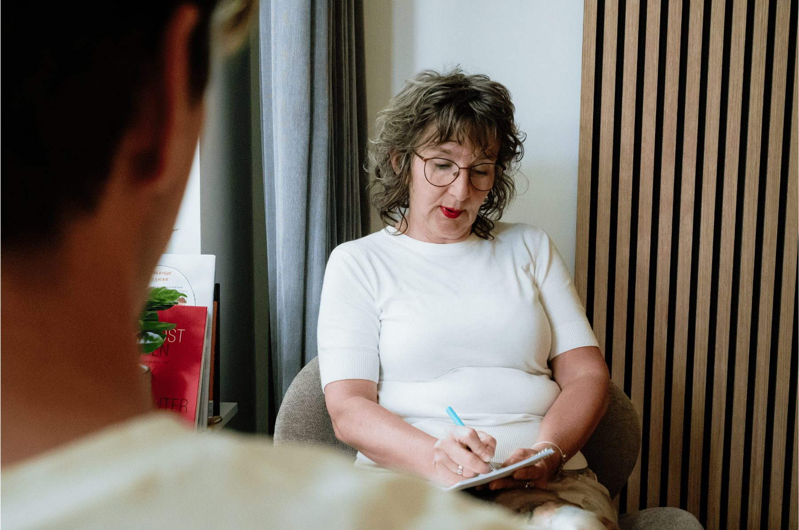

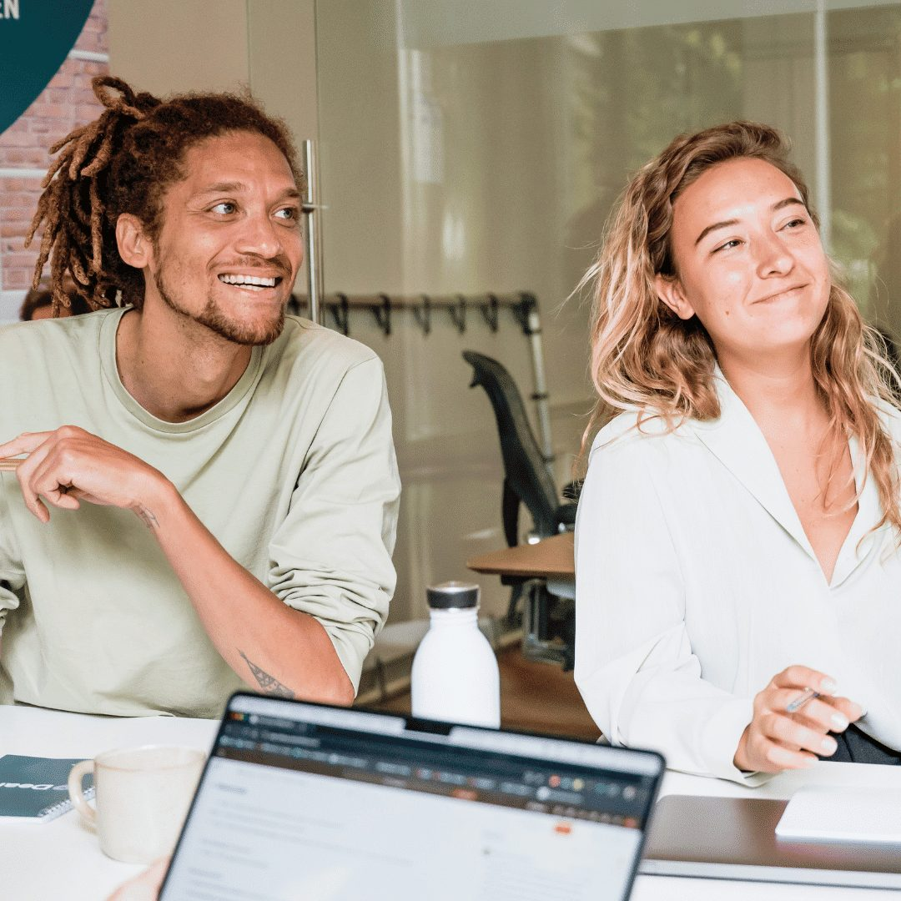
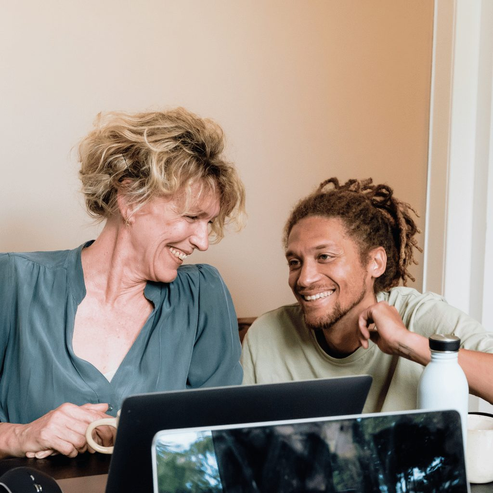
Waar staat je organisatie, en wat heeft ze nodig?
Een adviseur schrijft het beleid met je mee. Leidinggevenden en teams weten wat ze kunnen doen.
Medewerkers vragen zelf aan, of HR en leidinggevenden doen het namens hen.
HR ziet aantallen en thema's. Nooit namen, nooit inhoud.
In het portaal, met de link van je werkgever. Een paar zinnen is genoeg.
Met een begeleider in de buurt. Klikt het niet? Dan zoeken we iemand anders.
Op locatie, online of wandelend. Vertrouwelijk, je werkgever leest niet mee.
Geen lang implementatietraject. Een kennismaking, een quickscan en een adviseur die het beleid met je meeschrijft. Daarna staat het portaal open voor je medewerkers.
Plan een kennismakingTwee niveaus: professional en expert. Bij de intake beoordelen we opleiding, ervaring en competenties. Zo past de begeleider bij de complexiteit van het verlies.
Bekijk de begeleidersEen vaste begeleider in de buurt. Kennismaking, daarna vijf sessies.
Meer →Als een heel team geraakt wordt. Bij een crisis binnen 48 uur.
Meer →Losse gesprekken van 45 minuten, zonder drempel.
Meer →Voor leidinggevenden, teams en HR.
Meer →Een adviseur schrijft het met je mee en houdt het levend.
Meer →Weet waar je staat, en wat je eerst aanpakt.
Meer →ingrijpende gebeurtenissen per medewerker
Bron: NN en Markteffect, 2025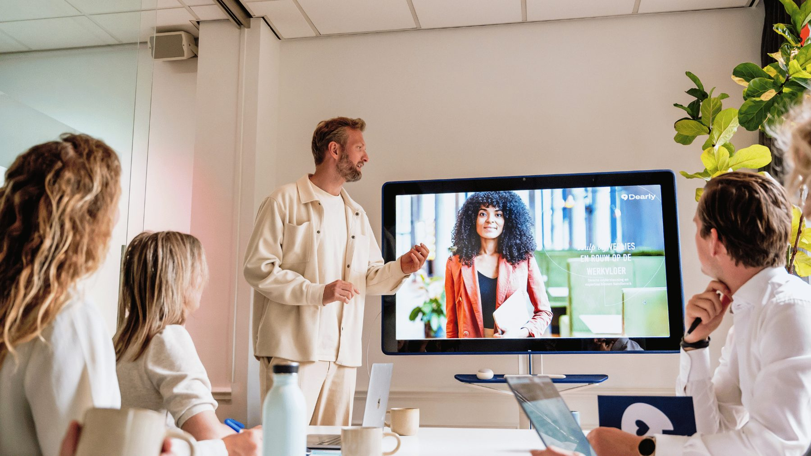
Reorganisatie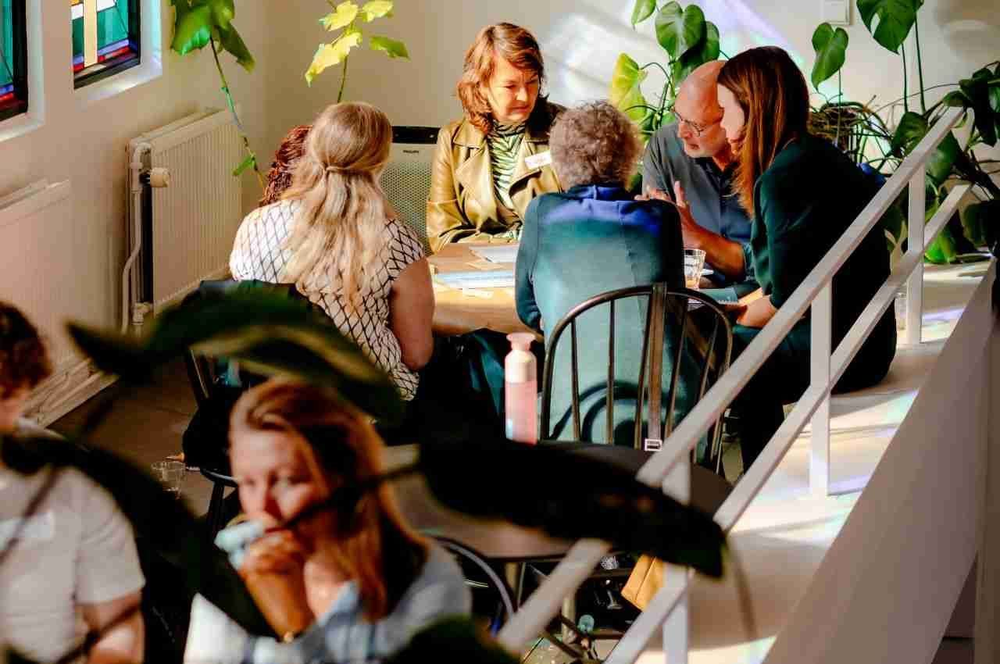
Mantelzorgdagen duurt verzuim na rouw en verlies gemiddeld.
ArboNed, 2023kost één verzuimdag een werkgever gemiddeld.
Sazas, 2024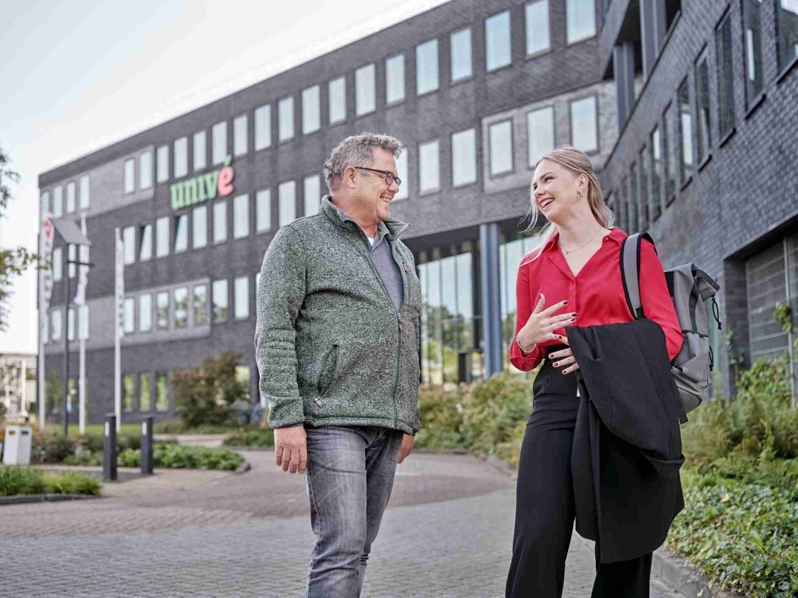
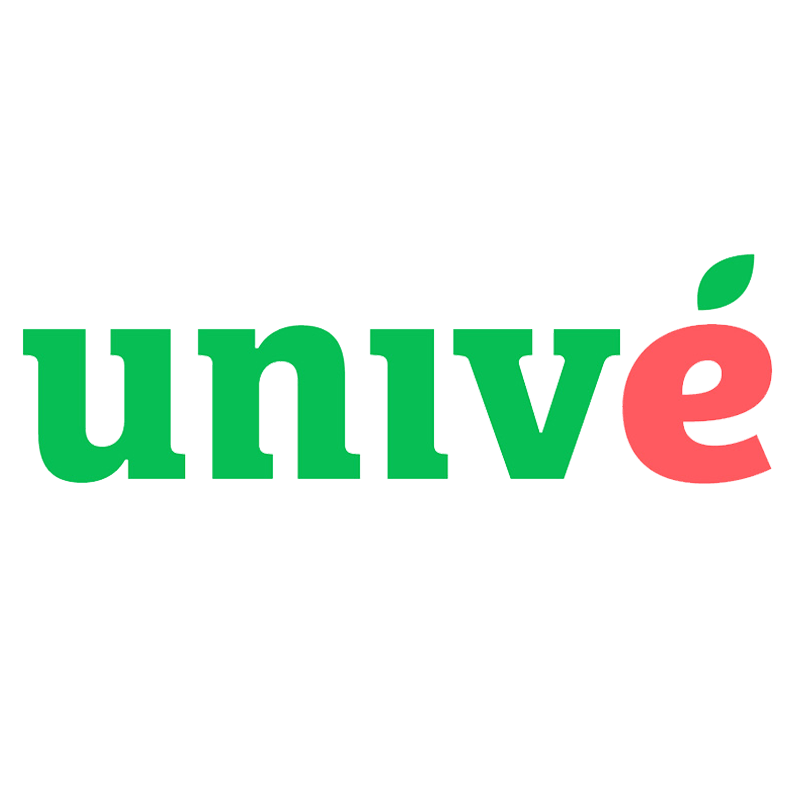
Zet in op een werkvloer waar verlies besproken kan worden.
→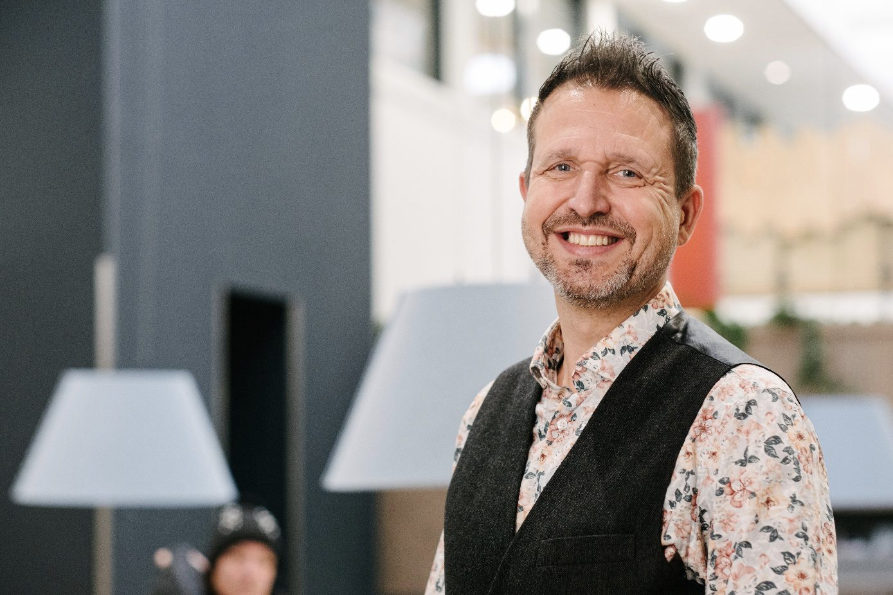
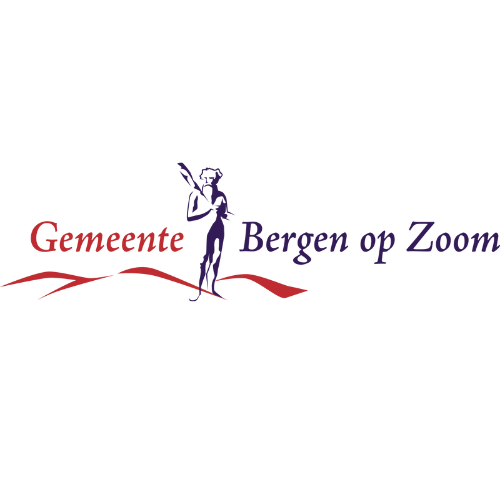
Meer trajecten, omdat medewerkers zelf kunnen aanvragen.
→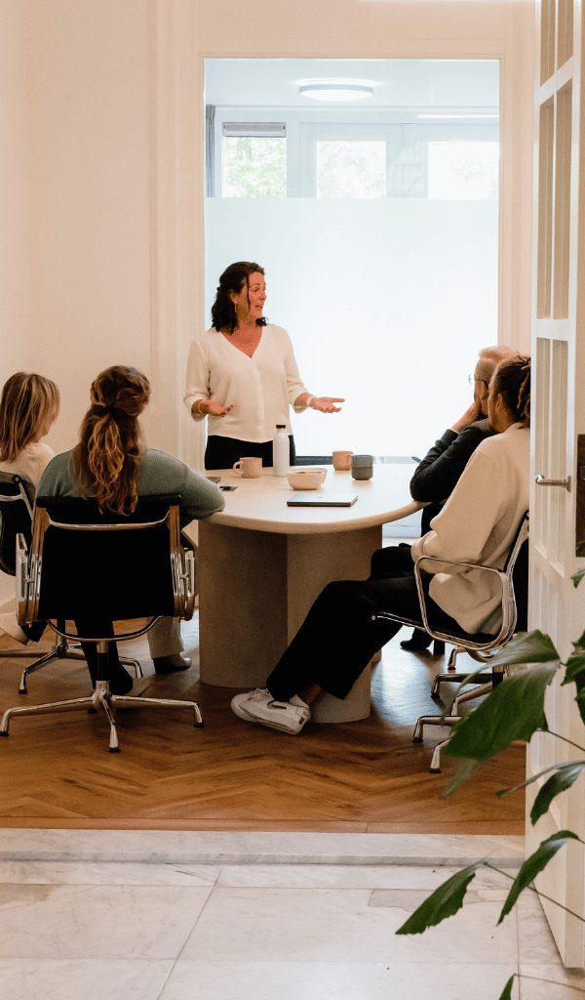
Van verdriet naar verbinding, met teambegeleiding.
→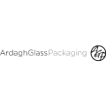
People First, ook als het tegenzit.
→Hier komt één echt citaat van een klant of medewerker, met naam en organisatie. Geen verzonnen tekst.
Een kennismaking is vrijblijvend. Je vertelt hoe het nu gaat, wij laten zien wat past.